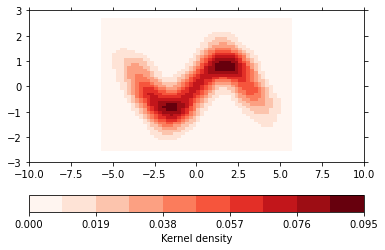
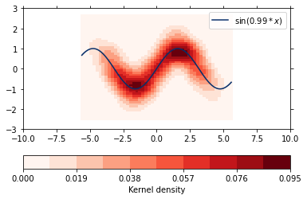

This page was generated from
regression-analysis/example_densityreg.ipynb.
Interactive online version: .
.
Interactive online version:
Note
Plot a fit over a density plot¶
Use the densityreg plot method to combine fits and their raw data.
This example uses artifical data to show you the capabilities of the densityreg plot method.
[1]:
import numpy as np
import xarray as xr
import psyplot.project as psy
%matplotlib inline
%config InlineBackend.close_figures = False
First we define our data which comes from multiple realizations of the underlying equation sin(x)
[2]:
all_x = []
all_y = []
for i in range(30):
deviation = np.abs(np.random.normal())
all_x.append(np.linspace(-np.pi - deviation, np.pi + deviation))
all_y.append(np.sin(all_x[-1]) + np.random.normal(scale=0.5, size=all_x[-1].size))
x = np.concatenate(all_x)
y = np.concatenate(all_y)
ds = xr.Dataset({'x': xr.Variable(('experiment', ), x),
'y': xr.Variable(('experiment', ), y)})
ds
[2]:
<xarray.Dataset>
Dimensions: (experiment: 1500)
Dimensions without coordinates: experiment
Data variables:
x (experiment) float64 -5.204 -4.991 -4.779 ... 3.795 3.964 4.132
y (experiment) float64 1.039 1.135 0.8968 ... -0.5161 -0.8129 -0.9519xarray.Dataset
- experiment: 1500
- x(experiment)float64-5.204 -4.991 ... 3.964 4.132
array([-5.20378618, -4.99138675, -4.77898731, ..., 3.79503345, 3.9637016 , 4.13236976]) - y(experiment)float641.039 1.135 ... -0.8129 -0.9519
array([ 1.03918831, 1.13536773, 0.89680026, ..., -0.51605069, -0.81293265, -0.95187431])
This dataset now contains the two variables x and y. A scatter plot of the data looks like
[3]:
psy.plot.lineplot(ds, name='y', coord='x', marker='o', linewidth=0)
[3]:
psyplot.project.Project([arr0: psyplot.data.InteractiveList([ arr0: 1-dim DataArray of y, with (experiment)=(1500,), ])])

However, it is hard to see how many data points there are shown. Therefore this is a good candidate for a density plot:
[4]:
psy.plot.density(ds, name='y', coord='x', cmap='Reds', bins=50, density='kde',
clabel='Kernel density')
[4]:
psyplot.project.Project([ arr1: 1-dim DataArray of y, with (experiment)=(1500,), ])

The densityreg plot method combines this plot with a fit through the data
[5]:
psy.close('all')
psy.plot.densityreg(ds, name='y', coord='x', cmap='Reds', bins=50, density='kde',
clabel='Kernel density',
color='Blues_r', fit=lambda x, a: np.sin(a * x),
legendlabels='$\sin (%(a)1.2f * %(xname)s$)')
/home/circleci/miniconda3/envs/docs/lib/python3.7/site-packages/psy_reg/utils.py:88: RuntimeWarning: Need finite parameter boundaries for automatic initial parameter estimation!
RuntimeWarning)
[5]:
psyplot.project.Project([ arr0: 1-dim DataArray of y, with (experiment)=(1500,), ])

[6]:
psy.close('all')